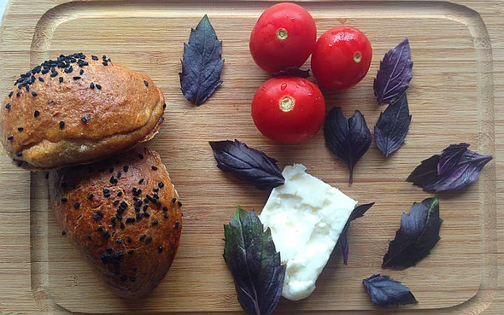
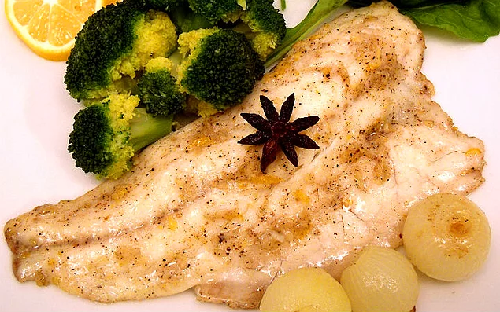

DİYET TARİFLER
Kepekli poğaça

Malzemeler
<>1,5 su bardağı yedi tahıllı un karışımı
<>1 su bardağı kepekli un
<>1 su bardağı light ılık süt
<> 1 çay bardağıfındık/zeytinyağı karışımı
<>1 tatlı kaşığı kuru maya
<>1 çay kaşığı toz şeker
<>1 tatlı kaşığı tuz
<> 1 adet yumurta beyazı
Peynirli iç harcı için
<>1 su bardağı lor peyniri
<> 1/2 çay kaşığı tatlı kırmızı biber
<>1/2 çay kaşığı karabiber
<> 1 çay bardağı ince çekilmiş ceviz içi
Üzeri için
<>1 adetyumurta sarısı
Yapılışı
⚫Poğaçanın hamuru için; ılık durumda olan light sütü, zeytinyağı ve fındık yağı ile karıştırın.
⚫Toz şeker ve kuru mayayı katıp, aktive olması için 5 dakika kadar bekletin.
⚫Yedi tahıllı un karışımı, kepekli un ve tuzu ayrı bir kasede harmanlayın.
⚫Un karışımını, yumurta beyazı ve ılık süt ile beklettiğiniz kuru maya karışımı ile harmanlayın.
⚫ Hamur toparlandığında üzerine nemli bir mutfak bezi kapatıp, 1 saat kadar bekletin.
⚫Peynirli iç harcı için; lor peyniri, ince çekilmiş ceviz içi, tatlı kırmızı biber ve karabiberi ayrı bir kapta harmanlayın.
⚫Mayalanan hamurdan ceviz büyüklüğünde parçalar kopartın. Orta kısımlarına peynirli iç harç yerleştirip, kapatın.
⚫Tabanını yağlı kağıt ile kapladığınız fırın tepsisine hazırladığınız poğaçaları aralıklı olarak yerleştirin.
⚫ Üzerlerine çırpılmış yumurta sarısı sürüp, çörek otu serpiştirin.
⚫ Önceden ısıtılmış 180 derece fırında üzerleri hafif bir şekilde kızarana kadar yaklaşık 25 dakika pişirin.
⚫Sabah kahvaltısı için bulut kadar hafif ve doyurucu kepekli poğaçalar hazır. Sevdiklerinizle paylaşmayı unutmayın.
Karışık Sebzeli Mantar Dolması
Malzemeler
<>20 adetbüyük mantar(kestane mantarı vb.)
<>4 yemek kaşığı zeytinyağ
<>ı1 adet kuru soğan
<>3 diş sarımsak1 adet domates
<>1 adet dolmalık yeşil biber
<>1 adet dolmalık sarı biber
<>1 adet patlıcan
<>1/4 demet maydanoz
<>1/2 adetlimon suyu,1/2 çay kaşığı tuz
<>1/2 çay kaşığı karabiber
Yapılışı
⚫Mantarların saplarını kesin ve bir kenara ayırın. İç kısımlarını temizleyin.
⚫Yağlı kağıt serili bir fırın tepsisine boş kısımları üstte kalacak şekilde aralıklı olarak dizin.
⚫ Üzerlerini zeytinyağı ile yağlayın.
⚫Kuru soğan ve sarımsakları küçük parçalar halinde yemeklik doğrayın.
cOrtadan ikiye kestiğiniz renkli dolmalık biberlerin çekirdeklerini çıkartın. Küçük küpler halinde kesin.
⚫Patlıcanın kabuğunu alacalı olarak soyduktan sonra uzunlamasına sekiz eşit parçaya bölün. Ardından küçük küpler halinde kesin.
⚫Domatesi kabuğunu soymadan küçük küpler halinde doğrayın. Maydanozu ve bir kenara ayırdığınız mantar saplarını incecik kıyın.
⚫Kalan zeytinyağını bir tavada kızdırın. Soğan ve sarımsakları renk alana kadar soteleyin.
⚫Aralarda karıştırıp, sotelenmesini sağlayarak sırasıyla; patlıcan, mantar, renkli biber ve domates küplerini katın.
⚫Suyunu çekene kadar sotelenen iç harca ince kıyılmış maydanoz, limon suyu, tuz ve karabiber ekleyin.
⚫Tüm malzemeyi karıştırdıktan sonra iç harcı ocaktan alın.
⚫Fırın tepsisine aldığınız mantarların iç kısımlarını hazırladığınız renkli, sağlıklı ve dumanı üzerinde harç ile tepeleme olarak doldurun.
⚫ Eğer "vegan" değilseniz sebze dolmalarının üzerine birer dilim kaşar yerleştirin ve kendinizi şımartın.
⚫Önceden ısıtılmış 250 derece fırında 10 dakika kadar pişirdikten sonra bekletmeden servis edin. Sevdiklerinizle paylaşın.
Tavuklu Sezar Salata
Malzemeler
<>2 adetfileto tavuk göğsü (200'er gramlık)
<>1/2 çay kaşığıtaze çekilmiş tane karabiber
<>1/2 çay kaşığı deniz tuzu
<>2 yemek kaşığı zeytinyağı
Salatası için
<>1 adet büyük boy yedikule marulu
<>1/2 su bardağı sızma zeytinyağı
<>1 adet yumurta sarısı
<>2 diş sarımsak
<>3 adet ançuez
<>1/2 tatlı kaşığıdi jon hardalı
<>1/2 adet taze sıkılmış limon suyu
<>1 tatlı kaşığı worcestershire sos
<>4 yemek kaşığı toz parmesan peyniri
<>1/2 çay kaşığı taze çekilmiş tane karabiber
<>1/2 çay kaşığı tuz
<>Servisi için
<>1 su bardağı kruton (fırınlanmış ekmek küpleri)
<>50 gramtraşlanmış parmesan peyniri
⚫Fileto tavuk göğüslerini yıkadıktan sonra kağıt havlu yardımıyla iyice kurulayın.
⚫Deniz tuzu ve taze çekilmiş tane karabiber ile lezzetlendirin.
⚫Zeytinyağını ızgara izli döküm tavada kızdırdıktan sonra fileto tavuk göğüslerini arkalı önlü renk alana kadar yüksek ateşte kızartın.
⚫Servisi esnasında kullanmak üzere soğumaması için düşük ısıda, önceden ısıtılmış fırında bekletin.
⚫Salatanın yapımı için; marulun yapraklarını tek tek ayıklayın. Bol suda yıkadıktan sonra kağıt havlu yardımıyla kuruladıktan sonra buzdolabında bekletin.
⚫Sosu için; ançüezleri küçük parçalar halinde doğrayın.
⚫Sarımsağı tuz ilavesi ile havanda ezdikten sonra ançüezleri ekleyin ve 1-2 dakika kadar ezin.
⚫Limon suyu, dijon hardalı, toz parmesan peyniri, Worcestershire sos, taze çekilmiş tane karabiber ve yumurta sarısını ekledikten sonra karıştırın.
⚫Zeytinyağını azar azar ekleyip, tüm malzemeyi homojen bir hal alana kadar hızlıca çırpmaya devam edin.
⚫Kuruladığınız marul yapraklarını bıçak değdirmeden elinizle iri parçalara ayırdıktan sonra çukur bir salata kasesine alın.
⚫Krutonları salatanın üzerine serpiştirin. Fırında beklettiğiniz fileto tavuk göğüslerini dilimledikten sonra servis kasesine alın.
⚫Salatanın sosunu üzerine gezdirin ve arzuya göre tüm malzemeyi harmanlayın.
⚫Son olarak iri parçalar halinde rendelediğiniz ya da bir sebze soyucu yardımıyla traşladığınız parmesan peynirini salataya ekledikten sonra bekletmeden sevdiklerinizle paylaşın.
Yumurtalı Domates Salatası
Malzemeler
<>4 adet büyük boy domates
<>4 adet yumurta
<>1 su bardağı rendelenmiş kaşar peyniri
<>1 su bardağı domates püresi
<>1/2 su bardağı sıcak su
<>2 yemek kaşığı zeytinyağı
<>1/2 çay kaşığı tuz
<>1/2 çay kaşığı karabiber
Yapılışı
⚫ Bol suda yıkadığınız büyük boy domatesleri, sap kısımlarından kapak şeklinde kesin.
⚫Orta kısımlarını bir kaşık yardımıyla çıkartın. Tuz ve karabiber ile lezzetlendirin.
⚫Dolmanın sosu için; zeytinyağını bir tavada kızdırın. Domates püresini ekleyin ve 2- 3 dakika kadar orta ateşte pişirin.
⚫Sıcak suyu ekledikten sonra sosu 2 dakika kadar kaynatın.
⚫Orta kısmını boşalttığınız domateslerin içine rendelenmiş kaşar peynirini eşit olarak paylaştırın.
⚫Fırın tepsisine aldığınız domateslerin içine birer adet yumurta kırın. Üzerine tuz ve karabiber serpiştirin.
⚫Domates sosunu ilave ettiğiniz yumurtalı domates dolmalarını önceden ısıtılmış 200 derece fırında 10 dakika kadar pişirin.
⚫Kızarmış ekmek dilimlerini bir bir bandırarak bu lezzeti bekletmeden sevdiklerinizle paylaşın.
Zencefilli Levrek

Malzemeler
<>4 adet fileto levrek
<>12 adet arpacık soğan
<>4 adet yıldız anason
Sosu için
<>1 adet kök zencefil (baş parmak büyüklüğünde bir kök yeter)
<>4 yemek kaşığı zeytinyağı
<>3 diş dövülmüş sarımsak
<>1 adet orta boy limon
<>1 çay kaşığı karabiber
<>1 tatlı kaşığı rendelenmiş muskat cevizi
<>1 tatlı kaşığıtuz
Yapılışı
⚫Kabuğunu soyduğunuz taze zencefil ve limon kabuğunu, rendenin ince tarafıyla derin bir kaseye rendeleyin.
⚫Zeytinyağı, dövülmüş sarımsak, karabiber, rendelenmiş muskat cevizi ve tuzu kattıktan sonra sos malzemelerini karıştırın.
⚫Levrek filetolarını sos kasesine alıp her taraflarının sosa bulanmasını sağlayın. Sos kasesinin üzerine streç film geçirip buzdolabında 30 dakika kadar bekletin.
⚫Fırın tepsisinin tabanını yağlı kağıtla kaplayın.
⚫Sosun içinden çıkardığınız levrek filetoları, kabuklarını soyduğunuz arpacık soğan ve yıldız anasonlarla birlikte kağıda yerleştirin.
⚫ Kalan sosu kaşıkla balıkların üzerine paylaştırın.
⚫Balıkların üzerini de yağlı kağıtla kaplayın. Kenarları içe doğru kıvırın ve sıkıca bastırın.
⚫Bir paket görüntüsü alan yağlı kağıtlar, bu şekilde pişerken açılmayacaktır.
⚫Önceden ısıtılmış 200 derece fırında 30 dakika kadar pişirdiğiniz balıkları arzuya göre haşlanmış brokoli ve limon dilimleri eşliğinde servis edin.
Muzlu Hurmalı Smoothie
Malzemeler
<>200 ml.az yağlı süt
<>1/2 adetmuz (60 gram)
<>3 adet hurma
<>2 adet bütün ceviz
<>10 gramyulaf kepeği
Yapılışı
⚫Çekirdeklerini çıkardığınız hurmaları küçük küpler halinde doğrayın.
⚫Kabuğunu soyduğunuz muzu dilimleyin. Cevizi küçük parçalar halinde kırın.
⚫Az yağlı süt, yulaf kepeği, muz, hurma ve bütün ceviz parçalarını blender kabına alın.
⚫Tüm malzemeyi yoğun bir kıvam alana kadar çekin. Hazır olan içeceği bekletmeden servis edin.